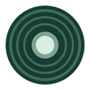

Find your records
Catalog numbers connect a Discogs release to albums in your library. Search manually or choose an album when you need another match.

Your Library for DiscogsA compact player for the music you already own, right on Discogs release pages. Connect your Navidrome library and listen as you browse.
Version 0.2.1 · Chrome extension · Requires your own HTTPS Navidrome server
Catalog numbers connect a Discogs release to albums in your library. Search manually or choose an album when you need another match.
Play, pause and seek from the sidebar. Collapse the player to keep browsing; releases without a match start collapsed.
Audio streams from the server you choose. No developer analytics or advertising. Passwords are not saved.
extension/ folder in Chrome using Developer mode and Load unpacked.Compatibility targets Navidrome 0.64. Plex is not supported. You sign in again after restarting Chrome, and closing or reloading a release page stops playback.
Catalog matches do not guarantee the same pressing or mastering. Seeking may buffer a complete track first. This project does not supply music or access to a shared library.